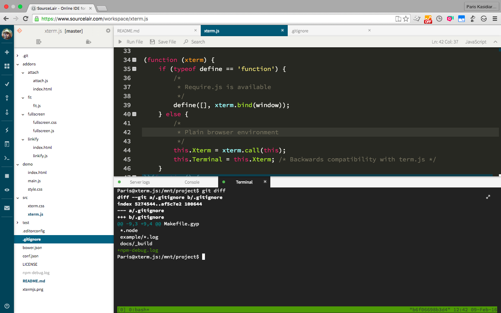

xterm.js

Xterm.js is a full xterm clone, written in JavaScript.
It is used at SourceLair to help people develop their applications in their browsers.
Xterm.js supplies a modular, event-based interface that lets developers build addons and themes on top of it.

Demo
To launch the demo simply run:
npm install
npm startThen open http://0.0.0.0:3000 in a web browser (use http://127.0.0.1:3000 is running under Windows).
Addons
Addons are JavaScript modules that attach functions to the Terminal prototype to extend its functionality. There are a handful available in the main repository in the addons directory, you can even write your own (though they may break when the internals of xterm.js change across versions).
To use an addon, just include the JavaScript file after xterm.js and before the Terminal object has been instantiated. The function should then be exposed on the Terminal object:
<script src="node_modules/src/xterm.js"></script>
<script src="node_modules/addons/linkify/linkify.js"></script>var xterm = new Terminal();
// init code...
xterm.linkify();Contribution and License Agreement
If you contribute code to this project, you are implicitly allowing your code to be distributed under the MIT license. You are also implicitly verifying that all code is your original work.
License
Copyright (c) 2014-2016, SourceLair, Private Company (www.sourcelair.com) (MIT License)
Copyright (c) 2012-2013, Christopher Jeffrey (MIT License)